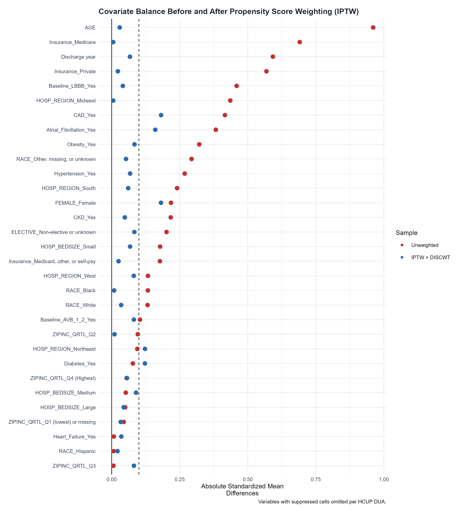
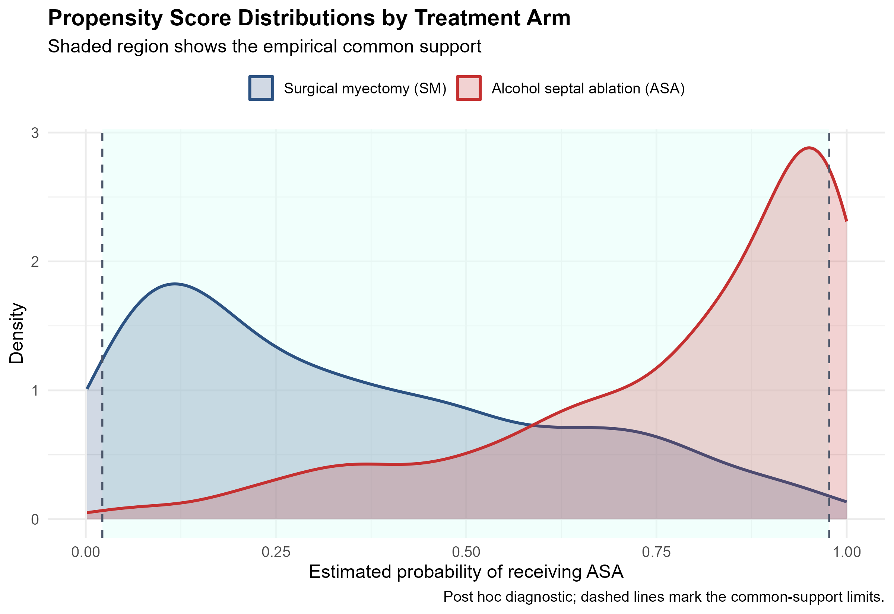

![]()
flowchart TD A["Total NIS Hospitalizations (2017–2022)<br>N = 41,065,286 (Weighted: 205,326,348)"] --> C["Valid survey design and mortality<br>N = 41,049,761 (Weighted: 205,248,728)"] C --> D["Adult age ≥18 years<br>N = 34,958,953 (Weighted: 174,794,698)"] D --> E["HCM (I42.1 / I42.2, any diagnosis)<br>N = 69,978 (Weighted: 349,890)"] E --> F["Septal reduction therapy (ASA or SM)<br>N = 1,783 (Weighted: 8,915)"] F --> H["Exclude both procedures or pre-existing device: 273<br>Retained: 1,510 (Weighted: 7,550)"] H --> I["Exclude concomitant surgery: 485<br>Any-position HCM cohort: 1,025 (Weighted: 5,125)"] I --> J["Exclude non-principal HCM: 101<br>Primary cohort: 924 (Weighted: 4,620)<br>509 hospital-years; 58 represented in both arms"] J --> K["Alcohol septal ablation (ASA)<br>N = 561 (Weighted: 2,805)<br>363 hospital-years"] J --> L["Surgical septal myectomy (SM)<br>N = 363 (Weighted: 1,815)<br>204 hospital-years"]
New Permanent Pacemaker Implantation After Alcohol Septal Ablation vs Surgical Septal Myectomy in Hypertrophic Cardiomyopathy: A Nationwide Analysis, NIS 2017–2022
Healthcare Cost and Utilization Project (HCUP) National Inpatient Sample (NIS) 2017–2022
Preamble
- Study Title: New Permanent Pacemaker Implantation After Alcohol Septal Ablation vs Surgical Septal Myectomy in Hypertrophic Cardiomyopathy: A Nationwide Analysis, NIS 2017–2022.
- Study Objective: To investigate the comparative risk of new permanent pacemaker (PPM) implantation and secondary peri-procedural complications following alcohol septal ablation (ASA) versus surgical septal myectomy (SM) in hospitalized patients with HCM (I42.1 or I42.2).
- Data Source: National Inpatient Sample (NIS), Healthcare Cost and Utilization Project (HCUP), Agency for Healthcare Research and Quality (AHRQ), discharge years 2017 through 2022.
- Primary Analytic Cohort: Adult hospitalizations ($$18 years) with a principal discharge diagnosis of HCM (ICD-10-CM
I42.1orI42.2inI10_DX1) who underwent isolated septal reduction therapy (N = 924unweighted, representing 4,620 survey-weighted admissions: ASA 561 [2,805 weighted] across 363 hospital-years; SM 363 [1,815 weighted] across 204 hospital-years). - Secondary Sensitivity Cohort: Any-position HCM diagnosis (
I42.1orI42.2acrossI10_DX1–I10_DX40; N = 1,025). - Intervention / Exposure: Alcohol septal ablation (ICD-10-PCS
025M3ZZ,025M4ZZ, or historical3E073GC) versus surgical septal myectomy (ICD-10-PCS02BM0ZZor02TM0ZZ). Reference arm: Surgical septal myectomy. - Sequential Exclusions:
- Both ASA and SM in the same hospitalization, or a pre-existing cardiac rhythm device (
Z95.0,Z95.810,Z45.010,Z45.018,Z45.02); combined to avoid reporting a small cell (N = 273). - Concomitant structural cardiac surgery causing independent conduction injury (SAVR, TAVR, MV replacement/repair/restriction, CABG;
N = 485). - HCM not recorded as the principal diagnosis (`N = 101).
- Both ASA and SM in the same hospitalization, or a pre-existing cardiac rhythm device (
- Primary Endpoint: New permanent pacemaker pulse generator (
0JH6[0,3][4,5,6,7,P]Z/0JH8[0,3][4,5,6,7,P]Z, including CRT-P) or leadless intracardiac pacemaker (02HK3NZ) implanted on or after the SRT procedure day (PRDAY_PPM\(\ge\)PRDAY_SRT). Pacing-lead-only insertions without generators and temporary pacing procedures were explicitly excluded from the permanent endpoint. - Secondary Endpoints: Any new permanent device (PPM, leadless PPM, ICD or subcutaneous ICD generator, or CRT-D), all-cause in-hospital mortality, complete heart block (
I44.2), sustained ventricular tachycardia/fibrillation/flutter (I47.2,I49.01,I49.02), cardiac tamponade or pericardial drainage (I31.4,0W9D*), stroke/TIA (I63*,I61*,G45*), acute kidney injury (N17*), length of stay (days), inflation-adjusted total hospital costs (2022 USD via HCUP Cost-to-Charge Ratios and CPI-U), and non-home discharge. - Hospital Cluster Note: Septal myectomy is highly concentrated in specialized tertiary referral centers. Year-to-year swings in unweighted SM counts reflect NIS hospital cluster sampling rather than changes in national surgical volume. Accordingly, results report distinct hospital-years per arm (363 ASA, 204 SM, with 58 in both arms).
- HCUP DUA Compliance: Unweighted cells of 1–10 are labeled “≤10”; complementary cells are labeled “Suppressed.” Weighted counts are masked whenever their unweighted cell is masked.
Methods
Data Source
We conducted a retrospective cohort study using the National Inpatient Sample (NIS), Healthcare Cost and Utilization Project (HCUP), sponsored by the Agency for Healthcare Research and Quality (AHRQ), spanning discharge years 2017 through 2022. The NIS is the largest publicly available all-payer inpatient healthcare database in the United States, capturing an approximate 20% stratified sample of discharges from US community hospitals, excluding rehabilitation and long-term acute care facilities. When weighted using discharge weights (DISCWT), the NIS provides statistically valid estimates representing approximately 35 million hospitalizations annually across the United States.
The NIS data structure incorporates hospital-level cluster identifiers (HOSP_NIS) and sampling strata (NIS_STRATUM) to account for the complex survey design. Clinical diagnoses and inpatient procedures are recorded using the International Classification of Diseases, Tenth Revision, Clinical Modification and Procedure Coding System (ICD-10-CM/PCS). Because the NIS consists of de-identified, publicly available administrative data, this study was deemed exempt from institutional review board (IRB) review and informed consent requirements. The investigation conformed to the HCUP Data Use Agreement: unweighted counts of 1–10 are labeled “≤10,” and complementary cells are labeled “Suppressed”; weighted counts are also masked when the unweighted cell is masked. Survey variance estimation used the lonely-PSU adjustment (survey.lonely.psu = "adjust") and survey.adjust.domain.lonely = TRUE. Study reporting adheres to STROBE and RECORD guidelines.
Study Population
The study cohort comprised adult hospitalizations (aged $$18 years) with a principal discharge diagnosis of hypertrophic cardiomyopathy (HCM; ICD-10-CM codes I42.1 or I42.2) who underwent septal reduction therapy (SRT) during the index admission. I42.1 identifies obstructive HCM and I42.2 other HCM; the cohort therefore includes both codes and is not restricted to obstructive HCM. YEAR denotes discharge year.
SRT procedures were categorized into two mutually exclusive treatment strategies: 1. Alcohol Septal Ablation (ASA): Identified by ICD-10-PCS codes 025M3ZZ (destruction of ventricular septum, percutaneous approach) and 025M4ZZ (destruction of ventricular septum, percutaneous endoscopic approach). In 2017–2018, ASA was frequently coded as 3E073GC (introduction of other therapeutic substance into coronary artery, percutaneous) in admissions with a principal diagnosis of HCM; this code was absent among HCM admissions from 2019 onward, when 025M3ZZ predominated. Both codes were therefore used to define ASA. 2. Surgical Septal Myectomy (SM): Identified by ICD-10-PCS codes 02BM0ZZ (excision of ventricular septum, open approach) and 02TM0ZZ (resection of ventricular septum, open approach).
To define an isolated-SRT cohort for analysis, we applied the following sequential exclusion criteria: 1. Concurrent ASA and SM: Patients receiving both ASA and SM during the same hospitalization were excluded to avoid crossover ambiguity. 2. Pre-existing cardiac rhythm devices: Patients with a pre-existing permanent pacemaker, implantable cardioverter-defibrillator (ICD), or cardiac resynchronization therapy (CRT) device were excluded using secondary ICD-10-CM diagnosis codes (Z95.0, Z95.810, Z45.010, Z45.018, and Z45.02). Nonspecific codes (Z95.818, Z45.09) were excluded from the definition. 3. Concomitant cardiac surgery: Admissions involving concomitant open or transcatheter structural cardiac procedures associated with an independent, established risk of atrioventricular or bundle branch conduction injury were excluded. These encompassed surgical aortic valve replacement or repair (SAVR; 02RF0, 02QF0), transcatheter aortic valve replacement (TAVR; 02RF3, 02RF4), mitral valve replacement, repair, or restriction (02RG, 02QG, 02VG), and coronary artery bypass graft surgery (CABG; 0210, 0211, 0212, 0213).
The primary analytic cohort included 509 distinct hospital-years (ASA 363, SM 204, with 58 represented in both arms). Hospital clusters are identified within year because NIS hospital and stratum identifiers are reassigned annually. Septal myectomy is a specialized surgical procedure concentrated in high-volume tertiary centers; year-to-year counts of surgical myectomy in the NIS reflect hospital cluster sampling rather than changes in national surgical volume.
Study Outcomes
The primary outcome was new permanent pacemaker (PPM) implantation performed on or after the day of the index SRT procedure (PPM_Post_SRT). New permanent pacemaker implantation was defined using ICD-10-PCS procedure codes for pulse generator insertion into the subcutaneous tissue of the chest or abdomen (single-chamber, single-chamber rate-responsive, dual-chamber, cardiac resynchronization therapy pacemaker [CRT-P], or cardiac rhythm related device; 0JH604Z–0JH607Z, 0JH60PZ, 0JH634Z–0JH637Z, 0JH63PZ, 0JH804Z–0JH807Z, 0JH80PZ, 0JH834Z–0JH837Z, 0JH83PZ) or leadless intracardiac pacemaker insertion into the right ventricle (02HK3NZ). In ICD-10-PCS Table 0JH, the device value (character 6) identifies single-chamber pacemakers (4), single-chamber rate-responsive pacemakers (5), dual-chamber pacemakers (6), CRT-P generators (7), and cardiac rhythm related devices (P). Procedure days were matched to procedure codes by slot (PRDAYn with PRn). Valid days were integer values from -4 through LOS + 3; negative days represent procedures before admission. An event counted as post-SRT only when both the SRT and PPM had valid days and the PPM day was on or after the SRT day. Missing PRDAY fields and invalid, fractional, or out-of-range values were treated as unknown timing; unknown timing did not establish a post-SRT event.
Importantly, pacing-lead-only codes (such as 02HK3JZ, 02H63JZ, 02HK0JZ, 02H60JZ, and related transvenous/epicardial lead insertion codes) and temporary pacing procedure codes (5A1213Z, 5A1223Z; excluding 5A1221Z which denotes cardiopulmonary bypass) were not counted as permanent pacemakers. These codes capture temporary transvenous pacing catheters, prophylactic intraoperative epicardial wires placed during sternotomy, or bedside temporary pacing, which are routine peri-procedural adjuncts rather than definitive permanent pacemakers. Erroneous inclusion of lead-only codes in administrative studies represents a well-recognized source of false-positive outcome misclassification.
Secondary outcomes included: 1. Any new permanent cardiac device: Implantation of any documented permanent generator on or after the SRT procedure day, including permanent pacemakers, leadless pacemakers, ICD and CRT-D generators. 2. In-hospital mortality: All-cause in-hospital death (DIED). 3. Complete heart block: Complete (third-degree) atrioventricular block (ICD-10-CM code I44.2) recorded in any diagnosis position. 4. Cardiac tamponade or pericardial drainage: Defined as a diagnosis of cardiac tamponade (I31.4) or an inpatient pericardial drainage procedure (0W9D*). Codes 0W9930Z and 0W993ZZ describe right pleural cavity drainage and were excluded. Pericardial effusion or hemopericardium diagnoses alone (I31.2, I31.3) without documented tamponade or procedural drainage were not counted. 5. Ventricular arrhythmias: Ventricular tachycardia, ventricular fibrillation, or ventricular flutter (I47.2, I49.01, I49.02) recorded in any diagnosis position. 6. Acute ischemic or hemorrhagic stroke / TIA: Acute ischemic stroke (I63*), nontraumatic intracerebral hemorrhage (I61*), or transient ischemic attack (G45*) recorded in any diagnosis position. 7. Acute kidney injury (AKI): Acute kidney failure (N17*) recorded in any diagnosis position. 8. Total inpatient length of stay (LOS): Total duration of hospitalization in days. 9. Inflation-adjusted total hospital costs: Estimated using HCUP CCR_NIS (including HCUP’s group-average fallback when a hospital-specific ratio is unavailable) applied to total charges (TOTCHG), then adjusted to 2022 US dollars using the all-items CPI-U as implemented by easyNIS::nis_cost(). 10. Non-home discharge: Discharge destination other than routine home discharge (e.g., skilled nursing facility, intermediate care, acute inpatient rehabilitation, or home health care; DISPUNIFORM \(\ne\) 1). In-hospital deaths are included as non-home discharges.
Covariates
We adjusted for a comprehensive panel of potential confounders, comprising: - Patient demographics: Age (continuous and categorized as <65 vs. ≥65 years), sex (female vs. male), race/ethnicity (White, Black, Hispanic, Asian or Pacific Islander, Native American, Other [HCUP race code 6], and Missing/Other [missing or unrecognized code]), primary expected insurance payer (Medicare, Medicaid, Private, Self-pay/uninsured, other), and median household income quartile based on the patient’s ZIP code (ZIPINC_QRTL). Table 1 shows White, Black, Hispanic, and a combined category labeled “Other, missing, or unknown,” which includes Asian or Pacific Islander, Native American, Other, and Missing/Other. The propensity model used the original encoded categories. - Hospital organizational characteristics: Hospital bed size (small, medium, large), hospital geographic location and teaching status (rural, urban non-teaching, urban teaching), and US census hospital region (Northeast, Midwest, South, West). - Admission characteristics: Admission type (elective vs. non-elective) and discharge year (2017–2022). - Baseline cardiac conduction abnormalities: Pre-existing right bundle branch block (RBBB; I45.0, I45.10, I45.19), left bundle branch block (LBBB; I44.7), first- or second-degree atrioventricular block (I44.0, I44.1), bifascicular block (I45.2), trifascicular block (I45.3), and any baseline conduction disease. - Clinical comorbidities: Atrial fibrillation or flutter (I48), essential or secondary hypertension (I10–I13, I15), diabetes mellitus (E08–E11, E13), chronic kidney disease (N18), coronary artery disease (I25), heart failure (I50, I11.0, I13.0, I13.2), obesity (E66, Z68.3, Z68.4), and overall comorbidity burden quantified using the 18-component count (elix18_count).
Statistical Analysis
All statistical analyses accounted for the complex survey design of the NIS, incorporating discharge sampling weights (DISCWT), hospital-level cluster sampling (HOSP_NIS), and geographic/hospital-type stratification (NIS_STRATUM) using Taylor series linearization to obtain design-unbiased national estimates and appropriate standard errors.
Baseline patient and hospital characteristics were compared between the ASA and SM cohorts. Age and the Elixhauser/18-component comorbidity counts are summarized as survey-weighted means (SD); LOS, hospital costs, and total charges are summarized as survey-weighted medians (IQR); categorical rows show unweighted n, DISCWT-weighted national counts, and weighted percentages. Continuous resource outcomes were compared using the design-based rank test (survey::svyranktest); categorical outcomes used design-adjusted chi-square tests. Table 1 reports weighted standardized mean differences (SMDs), with an SMD > 0.10 designated a priori as indicating clinically meaningful imbalance.
The association between SRT modality (ASA vs. SM, with SM as the reference) and new PPM post-SRT was evaluated using survey-weighted multivariable logistic regression. The amended model adjusted for age, female sex, baseline conduction disease, elective admission, atrial fibrillation/flutter, heart failure, diabetes, chronic kidney disease, hospital bed size, the 18-component count, and discharge year. Model-specific analysis N, events, and predictor degrees of freedom are reported with the results; the primary model had 117 events and 14 predictor degrees of freedom (EPV 8.4). Adjusted odds ratios (aORs) with 95% confidence intervals (CIs) were generated. The adjusted VT/VF/flutter model was fit when each arm had at least 10 events; this threshold was enforced in the analysis code.
Protocol amendment
After observing the original results, the study PI approved an amendment replacing the 31-flag Elixhauser index, calculated across all diagnosis positions, with an 18-component count derived from discharge diagnoses in the primary model and models using its covariate set. Components were excluded because they duplicate separately modeled covariates or may be first recorded during the SRT admission. NIS 2017–2022 lacks diagnosis-level present-on-admission (POA) indicators, so these exclusions reduce the risk of adjusting for conditions acquired during the admission. The retained components are pulmonary circulation disorders, peripheral vascular disorders, paralysis, other neurological disorders, chronic pulmonary disease, hypothyroidism, liver disease, peptic ulcer disease excluding bleeding, AIDS/HIV, lymphoma, metastatic cancer, solid tumor without metastasis, rheumatoid arthritis/collagen vascular disease, deficiency anemia, alcohol abuse, drug abuse, psychoses, and depression. The original full-index primary and secondary results are reported in full alongside the amended estimates.
The prespecified stabilized inverse probability of treatment weights targeting the average treatment effect (ATE) used a logistic propensity model with 21 baseline covariates: age, sex, race/ethnicity, primary expected payer, ZIP income quartile, hospital region, bed size, teaching status, elective admission, discharge year, baseline RBBB, LBBB, first/second-degree AV block, bifascicular block, atrial fibrillation/flutter, hypertension, diabetes, chronic kidney disease, coronary artery disease, heart failure, and obesity. Propensity models were fit on the sampled records without survey weights. All three weighting analyses used the same complete-case set of 924 records (ASA 561; SM 363); no rows were lost. Estimated propensity weights were treated as fixed, so confidence intervals are conditional on the estimated weights. Stabilized ATE weights were multiplied by DISCWT in a design retaining HOSP_NIS clusters and NIS_STRATUM strata. Balance used the actual analysis weights (IPTW × DISCWT) with binary covariates standardized. No trimming was applied to the prespecified analysis.
Two additional propensity-weight analyses were conducted post hoc because the ATE analysis showed extreme weights and limited covariate overlap. Overlap weights targeting the average treatment effect in the overlap population (ATO) and stabilized ATE weights truncated at the pooled 1st and 99th percentiles were multiplied by DISCWT. Balance for both used the actual analysis weights and standardized binary covariates. Empirical common support was defined as the intersection of the observed propensity-score ranges in the two treatment groups; percentages outside that interval are sample percentages. These post hoc analyses are exploratory.
To evaluate the potential impact of unmeasured confounding, E-values were calculated for the point estimate and the confidence limit closest to the null using the odds-ratio to risk-ratio square-root approximation. The E-value quantifies the minimum confounder associations with treatment and PPM needed to explain the observed association, conditional on measured covariates.
Prespecified subgroup analyses were conducted across clinically relevant strata: 1. Age (<65 vs. ≥65 years); 2. Sex (female vs. male); 3. Baseline conduction disease (present vs. absent); 4. Calendar era (2017–2019 vs. 2020–2022). Heterogeneity was assessed with treatment-by-subgroup interaction terms in survey-weighted multivariable models and survey-weighted Wald tests. Stratum-specific estimates were derived from those same interaction models using linear contrasts. Interaction results were interpreted as inconclusive about heterogeneity.
Prespecified sensitivity analyses were performed to assess the sensitivity of the primary estimate: 1. Diagnosis position: Expanding the cohort to include patients with HCM recorded in any diagnostic position (ICD-10-CM I42.1 or I42.2 in I10_DX1–I10_DX40); 2. Concomitant mitral valve surgery: Adding back surgical myectomy admissions with principal HCM and concomitant mitral valve surgery (02RG, 02QG, 02VG), while retaining the pre-existing-device exclusion and excluding other concomitant conduction-risk surgery; 3. Timing threshold: Defining new PPM implantation on any hospital day (PPM_Any_Day), irrespective of whether a valid procedure day is documented; 4. Expanded device outcome: Assessing any new permanent generator (PPM, ICD, or CRT-D) on or after the SRT day; The any-device any-day model was fit separately as an exploratory post hoc analysis. It assessed the expanded generator endpoint regardless of procedure day and was not one of the four prespecified sensitivity analyses.
Nine fits were originally specified post hoc across the primary-model and IPTW specifications. The original 18-component fit was one of these exploratory fits; after the PI-approved amendment, it became the amended primary model. The other primary-model fits omitted the 18-component count, replaced it with the 23-component count, omitted baseline conduction disease, applied a strict ASA definition, or restricted the outcome to generator device values 4–7 and leadless pacemakers while retaining the original procedure-day rule. The strict ASA sensitivity restricted ASA admissions to those identified by the established 025M3ZZ/025M4ZZ codes and excluded admissions identified only by legacy code 3E073GC, while retaining all SM admissions. The three IPTW fits added elixsum, the 23-component count, or the 18-component count to the same 21 propensity covariates; the prespecified 21-covariate IPTW model did not include Elixhauser terms.
The 23-component count excluded CHF, cardiac arrhythmias, uncomplicated hypertension, uncomplicated diabetes, complicated diabetes, renal failure, obesity, and complicated hypertension because these components overlap separately modeled covariates. The 23-component count retains valvular disease, coagulopathy, weight loss, fluid and electrolyte disorders, and blood loss anemia, diagnoses that may be acquired or first recorded during an SRT admission. Because NIS 2017–2022 has no diagnosis-level POA indicator, the 18-component count additionally excluded these five diagnoses. Its retained components were pulmonary circulation disorders, peripheral vascular disorders, paralysis, other neurological disorders, chronic pulmonary disease, hypothyroidism, liver disease, peptic ulcer disease excluding bleeding, AIDS/HIV, lymphoma, metastatic cancer, solid tumor without metastasis, rheumatoid arthritis/collagen vascular disease, deficiency anemia, alcohol abuse, drug abuse, psychoses, and depression. The eight remaining post hoc fits are exploratory and do not alter the prespecified models.
Continuous skewed healthcare resource outcomes (total inpatient LOS and inflation-adjusted hospital costs) were analyzed using survey-weighted gamma GLMs with log links. LOS values of zero were excluded because the gamma model requires positive values; ≤10 zero-day stays were excluded. All hypothesis tests were two-sided with alpha 0.05. Analyses used R 4.6.1 and the survey, gtsummary, WeightIt, cobalt, EValue, easyNIS, and arrow packages.
Abstract
Background: Alcohol septal ablation (ASA) and surgical septal myectomy (SM) are established septal reduction therapies for HCM. Methods: We analyzed 924 adult NIS admissions with principal-diagnosis HCM and isolated ASA or SM from 2017–2022 using survey-weighted regression and prespecified sensitivity analyses. Propensity-score analyses used 21 baseline covariates; overlap weighting and 1st/99th-percentile ATE-weight truncation were post hoc checks. Results: New post-SRT PPM occurred in 87 of 561 ASA admissions (weighted event count 435; 15.5%) and 30 of 363 SM admissions (weighted event count 150; 8.3%). The amended primary model estimated an aOR of 1.47, 95% CI 0.88–2.47; p=0.1394. The prespecified stabilized ATE-IPTW estimate was aOR 1.13, 95% CI 0.48–2.65; p=0.7856, with limited covariate overlap. Post hoc overlap weighting gave aOR 1.42 (95% CI 0.80–2.50; p=0.2285). Conclusions: The primary association was imprecise and compatible with no difference. Secondary outcome associations are observational and should not be interpreted causally.
Key Findings
- The crude survey-weighted post-SRT PPM rates were 15.5% with ASA and 8.3% with SM; the multivariable association was aOR 1.47 (95% CI 0.88–2.47).
- The prespecified ATE-IPTW estimate was attenuated (aOR 1.13, 95% CI 0.48–2.65) with limited overlap. Post hoc overlap weighting yielded aOR 1.42 (95% CI 0.80–2.50).
- Secondary outcome estimates and subgroup interaction results are summarized below; subgroup interaction results were inconclusive about heterogeneity.
Study Flow and Attrition (CONSORT Flowchart)
Table S2. Sequential Attrition Across Cohort Definition Steps
| Step | Description | Discharges (Unweighted) | National Estimate (Weighted) | Excluded (Unweighted) | Excluded (Weighted) |
|---|---|---|---|---|---|
| 0 | Total NIS Hospitalizations | 41,065,286 | 205,326,348 | — | — |
| 1 | Valid survey design and mortality (DIED) | 41,049,761 | 205,248,728 | 15,525 | 77,620 |
| 2 | Adult age (≥ 18 years) | 34,958,953 | 174,794,698 | 6,090,808 | 30,454,030 |
| 3 | Hypertrophic cardiomyopathy (I42.1 or I42.2 in any DX) | 69,978 | 349,890 | 34,888,975 | 174,444,808 |
| 4 | Septal reduction therapy (ASA: 025M3ZZ, 025M4ZZ, 3E073GC; SM: 02BM0ZZ, 02TM0ZZ in any PR) | 1,783 | 8,915 | 68,195 | 340,975 |
| 5 | Exclusion: Both ASA and SM in same admission, or pre-existing pacemaker / ICD / CRT (Z95.0, Z95810, Z45010, Z45018, Z4502) | 1,510 | 7,550 | 273 | 1,365 |
| 6 | Exclusion: Concomitant conduction-injury surgery (SAVR/AV repair, MV surgery, CABG, TAVR) -> Sensitivity Cohort: Any-Position HCM | 1,025 | 5,125 | 485 | 2,425 |
| 7 | Exclusion: Non-principal HCM (I10_DX1 not I42.1/I42.2) -> Primary Analytic Cohort | 924 | 4,620 | 101 | 505 |
Table 1: Baseline Characteristics (ASA vs SM)
| Baseline Characteristic | Overall Primary Cohort N = 924 (Wt: 4,620)1 |
SM (Reference) N = 363 (Wt: 1,815)1 |
ASA N = 561 (Wt: 2,805)1 |
Weighted SMD |
|---|---|---|---|---|
| Age, years | 63.3 (13.6) | 56.1 (13.3) | 68.0 (11.6) | 0.96 |
| Female Sex | 0.22 | |||
| Male | 321 (1,605; 34.7%) | 149 (745; 41.0%) | 172 (860; 30.7%) | |
| Female | 603 (3,015; 65.3%) | 214 (1,070; 59.0%) | 389 (1,945; 69.3%) | |
| Race/Ethnicity | 0.29 | |||
| White | 711 (3,555; 76.9%) | 267 (1,335; 73.6%) | 444 (2,220; 79.1%) | |
| Black | 76 (380; 8.2%) | 22 (110; 6.1%) | 54 (270; 9.6%) | |
| Hispanic | 39 (195; 4.2%) | 15 (75; 4.1%) | 24 (120; 4.3%) | |
| Other, missing, or unknown | 98 (490; 10.6%) | 59 (295; 16.3%) | 39 (195; 7.0%) | |
| Primary Expected Payer | 0.69 | |||
| Medicare | 468 (2,340; 50.6%) | 112 (560; 30.9%) | 356 (1,780; 63.5%) | |
| Private | 353 (1,765; 38.2%) | 198 (990; 54.5%) | 155 (775; 27.6%) | |
| Medicaid, other, or self-pay | 103 (515; 11.1%) | 53 (265; 14.6%) | 50 (250; 8.9%) | |
| Median Household Income Quartile | 0.10 | |||
| Q1 (lowest) or missing | 221 (1,105; 23.9%) | 91 (455; 25.1%) | 130 (650; 23.2%) | |
| Q2 | 224 (1,120; 24.2%) | 79 (395; 21.8%) | 145 (725; 25.8%) | |
| Q3 | 223 (1,115; 24.1%) | 87 (435; 24.0%) | 136 (680; 24.2%) | |
| Q4 (Highest) | 256 (1,280; 27.7%) | 106 (530; 29.2%) | 150 (750; 26.7%) | |
| Hospital Region | 0.44 | |||
| Northeast | 242 (1,210; 26.2%) | 86 (430; 23.7%) | 156 (780; 27.8%) | |
| Midwest | 264 (1,320; 28.6%) | 147 (735; 40.5%) | 117 (585; 20.9%) | |
| South | 277 (1,385; 30.0%) | 85 (425; 23.4%) | 192 (960; 34.2%) | |
| West | 141 (705; 15.3%) | 45 (225; 12.4%) | 96 (480; 17.1%) | |
| Hospital Bed Size | 0.18 | |||
| Large | 706 (3,530; 76.4%) | 282 (1,410; 77.7%) | 424 (2,120; 75.6%) | |
| Medium | 162 (810; 17.5%) | 68 (340; 18.7%) | 94 (470; 16.8%) | |
| Small | 56 (280; 6.1%) | 13 (65; 3.6%) | 43 (215; 7.7%) | |
| Hospital Location and Teaching Status | ||||
| Urban teaching | Suppressed | Suppressed | Suppressed | |
| Rural | ≤10 | ≤10 | ≤10 | |
| Urban non-teaching | Suppressed | ≤10 | Suppressed | |
| Elective Admission | 0.20 | |||
| Elective | 797 (3,985; 86.3%) | 328 (1,640; 90.4%) | 469 (2,345; 83.6%) | |
| Non-elective or unknown | 127 (635; 13.7%) | 35 (175; 9.6%) | 92 (460; 16.4%) | |
| Right Bundle Branch Block (RBBB) | Suppressed | ≤10 | Suppressed | |
| Left Bundle Branch Block (LBBB) | 142 (710; 15.4%) | 93 (465; 25.6%) | 49 (245; 8.7%) | 0.46 |
| 1st or 2nd Degree AV Block | 57 (285; 6.2%) | 17 (85; 4.7%) | 40 (200; 7.1%) | 0.10 |
| Bifascicular Block | Suppressed | ≤10 | Suppressed | |
| Any Baseline Conduction Disease | 307 (1,535; 33.2%) | 105 (525; 28.9%) | 202 (1,010; 36.0%) | 0.15 |
| Atrial Fibrillation / Flutter | 276 (1,380; 29.9%) | 147 (735; 40.5%) | 129 (645; 23.0%) | 0.38 |
| Hypertension | 729 (3,645; 78.9%) | 262 (1,310; 72.2%) | 467 (2,335; 83.2%) | 0.27 |
| Diabetes Mellitus | 188 (940; 20.3%) | 67 (335; 18.5%) | 121 (605; 21.6%) | 0.08 |
| Chronic Kidney Disease | 139 (695; 15.0%) | 38 (190; 10.5%) | 101 (505; 18.0%) | 0.22 |
| Coronary Artery Disease | 346 (1,730; 37.4%) | 93 (465; 25.6%) | 253 (1,265; 45.1%) | 0.42 |
| Heart Failure | 372 (1,860; 40.3%) | 147 (735; 40.5%) | 225 (1,125; 40.1%) | 0.01 |
| Obesity | 288 (1,440; 31.2%) | 146 (730; 40.2%) | 142 (710; 25.3%) | 0.32 |
| Elixhauser Comorbidity Index | 4.3 (2.0) | 4.7 (2.0) | 4.0 (2.0) | 0.35 |
| Amended Elixhauser Count (18 Components) | 0.9 (1.0) | 0.9 (1.0) | 0.9 (1.0) | 0.07 |
| 1 Unweighted cells of ≤10 are labeled ≤10; complementary cells are labeled Suppressed. Age and Elixhauser counts (full index and amended 18-component count) are survey-weighted mean (SD); categorical rows show unweighted n (DISCWT-weighted national count; weighted %). | ||||
Age and Elixhauser counts are survey-weighted mean (SD). Categorical cells show unweighted n, DISCWT-weighted national count, and weighted percentage. Cells based on 1–10 unweighted discharges and complementary cells are suppressed. For display, race/ethnicity combines all categories other than White, Black, and Hispanic. Payer combines Medicaid, other, and self-pay. Elective status combines non-elective and unknown admissions. Income combines the lowest quartile and missing values. The teaching-status block is suppressed. Weighted SMDs use the displayed categories.
Table 2: Clinical Outcomes (Univariable Analysis)
| Clinical Outcome | Overall Primary Cohort N = 924 (Wt: 4,620)1 |
SM (Reference) N = 363 (Wt: 1,815)1 |
ASA N = 561 (Wt: 2,805)1 |
P Value |
|---|---|---|---|---|
| New Permanent Pacemaker (Post-SRT Day, Primary) | 117 (585; 12.7%) | 30 (150; 8.3%) | 87 (435; 15.5%) | 0.002 |
| Temporary Pacing Only (No Generator) | 328 (1,640; 35.5%) | 61 (305; 16.8%) | 267 (1,335; 47.6%) | <0.001 |
| Pacing Lead Insertion Without Generator (False Positives) | 115 (575; 12.4%) | 39 (195; 10.7%) | 76 (380; 13.5%) | 0.2 |
| In-Hospital Mortality | Suppressed | ≤10 | ≤10 | 0.3 |
| Complete Heart Block (I44.2) | 204 (1,020; 22.1%) | 51 (255; 14.0%) | 153 (765; 27.3%) | <0.001 |
| Cardiac Tamponade / Pericardial Drainage | ≤10 | ≤10 | ≤10 | 0.5 |
| Ventricular Tachycardia / Fibrillation / Flutter | 97 (485; 10.5%) | 38 (190; 10.5%) | 59 (295; 10.5%) | >0.9 |
| Stroke / TIA (I63*, I61*, G45*) | ≤10 | ≤10 | ≤10 | 0.6 |
| Acute Kidney Injury (N17*) | 64 (320; 6.9%) | 39 (195; 10.7%) | 25 (125; 4.5%) | <0.001 |
| Length of Stay, days | 4.0 (2.0, 6.0) | 6.0 (5.0, 8.0) | 3.0 (2.0, 4.0) | <0.001 |
| Hospital Costs, Inflation-Adjusted 2022 USD | 28,634.8 (18,153.7, 44,662.1) | 41,757.0 (31,176.3, 58,225.1) | 20,406.2 (14,112.4, 31,029.4) | <0.001 |
| Total Hospital Charges, USD | 94,797.0 (56,031.0, 147,087.0) | 131,756.0 (97,375.0, 194,039.0) | 65,900.0 (43,470.0, 111,341.0) | <0.001 |
| Non-Home Discharge | 246 (1,230; 26.6%) | 163 (815; 44.9%) | 83 (415; 14.8%) | <0.001 |
| 1 Unweighted cells of ≤10 are labeled ≤10; complementary cells are labeled Suppressed. LOS, hospital costs, and total charges are survey-weighted median (Q1, Q3); categorical rows show unweighted n (DISCWT-weighted national count; weighted %). | ||||
LOS, hospital costs, and total charges are survey-weighted median (Q1, Q3). Categorical cells show unweighted n, DISCWT-weighted national count, and weighted percentage. Unweighted cells of ≤10 and all complementary categorical cells are suppressed.
Any-day PPM timing and expanded-device outcomes are reported as sensitivity odds ratios below; event counts and rates are omitted to prevent reconstruction of suppressed cells.
Primary Multivariable Model: Permanent Pacemaker Implantation
The primary outcome was new permanent pacemaker (PPM) generator or leadless pacemaker implantation occurring on or after the SRT procedure day (PPM_Post_SRT).
The primary model included 924 records, 117 PPM events, and 14 predictor degrees of freedom (EPV = 8.4). The model adjusted for age, female sex, baseline conduction disease, elective admission, atrial fibrillation, heart failure, diabetes mellitus, chronic kidney disease, hospital bed size, the amended 18-component count, and discharge year.
| Covariate | Adjusted OR (aOR) | 95% CI | P Value |
|---|---|---|---|
| Septal Reduction Modality | |||
| SM | — | — | |
| ASA | 1.47 | 0.88, 2.47 | 0.14 |
| Age, per year | 1.03 | 1.01, 1.05 | 0.009 |
| Female Sex | |||
| Male | — | — | |
| Female | 1.50 | 0.90, 2.48 | 0.12 |
| Baseline Conduction Disease | |||
| No | — | — | |
| Yes | 1.47 | 0.99, 2.19 | 0.054 |
| Elective Admission | |||
| Elective | — | — | |
| Non-elective | 0.82 | 0.41, 1.64 | 0.6 |
| Unknown | 1.70 | 0.13, 21.9 | 0.7 |
| Atrial Fibrillation / Flutter | |||
| No | — | — | |
| Yes | 1.07 | 0.67, 1.72 | 0.8 |
| Heart Failure | |||
| No | — | — | |
| Yes | 0.92 | 0.60, 1.40 | 0.7 |
| Diabetes Mellitus | |||
| No | — | — | |
| Yes | 1.06 | 0.65, 1.71 | 0.8 |
| Chronic Kidney Disease | |||
| No | — | — | |
| Yes | 1.09 | 0.61, 1.95 | 0.8 |
| Hospital Bed Size | |||
| Large | — | — | |
| Medium | 0.87 | 0.53, 1.45 | 0.6 |
| Small | 0.64 | 0.25, 1.65 | 0.4 |
| Elixhauser Comorbidity Count (18 Components) | 1.19 | 0.98, 1.45 | 0.078 |
| Discharge Year | 0.98 | 0.87, 1.10 | 0.8 |
| Abbreviations: CI = Confidence Interval, OR = Odds Ratio | |||
Sensitivity to Unmeasured Confounding (E-Values)
- Adjusted Odds Ratio (aOR) for ASA vs SM: 1.47 (95% CI: 0.88 – 2.47, p = 0.1394)
- E-value for Point Estimate: 1.72
- E-value for 95% Confidence Interval Lower Bound: 1.00
Interpretation: The primary point estimate was 1.47 (95% CI 0.88–2.47) and was compatible with no difference. All prespecified sensitivity confidence intervals included 1. These observational associations do not establish causal effects.

Original prespecified model (full Elixhauser index)
The original primary and secondary estimates are retained as a comparison with the amended models.
| Original analysis | Outcome | Effect metric | Estimate (95% CI) | P Value | E-value | E-value at CI limit |
|---|---|---|---|---|---|---|
| Original prespecified model (full Elixhauser index) | Primary PPM | aOR | 2.02 (1.21 – 3.39) | 0.0076 | 2.20 | 1.43 |
| Original prespecified secondary model (full Elixhauser index) | Complete Heart Block | aOR | 2.88 (1.82 – 4.54) | <0.0001 | — | — |
| Original prespecified secondary model (full Elixhauser index) | Acute Kidney Injury | aOR | 0.36 (0.19 – 0.71) | 0.0030 | — | — |
| Original prespecified secondary model (full Elixhauser index) | Non-Home Discharge | aOR | 0.14 (0.09 – 0.22) | <0.0001 | — | — |
| Original prespecified secondary model (full Elixhauser index) | Length of Stay | Exp(Beta) Ratio | 0.45 (0.39 – 0.53) | <0.0001 | — | — |
| Original prespecified secondary model (full Elixhauser index) | Hospital Costs | Exp(Beta) Ratio | 0.52 (0.45 – 0.59) | <0.0001 | — | — |
| Original prespecified sensitivity analysis | Any-Position HCM Cohort | aOR | 1.79 (1.11 – 2.89) | 0.0175 | — | — |
| Original prespecified sensitivity analysis | SM + Concomitant Mitral Valve Surgery Added Back | aOR | 1.93 (1.21 – 3.09) | 0.0059 | — | — |
| Original prespecified sensitivity analysis | Any-Day PPM Timing | aOR | 2.13 (1.29 – 3.53) | 0.0034 | — | — |
| Original prespecified sensitivity analysis | Any Permanent Device | aOR | 1.50 (0.97 – 2.33) | 0.0695 | — | — |
| Original exploratory any-device any-day model | Any Permanent Device, Any Day | aOR | 1.63 (1.06 – 2.51) | 0.0276 | — | — |
| Original full-index subgroup model | Age <65 years | aOR | 1.53 (0.75 – 3.16) | 0.2426 | — | — |
| Original full-index subgroup model | Age ≥65 years | aOR | 3.24 (1.62 – 6.47) | 0.0010 | — | — |
| Original full-index subgroup model | Male | aOR | 1.21 (0.48 – 3.01) | 0.6845 | — | — |
| Original full-index subgroup model | Female | aOR | 2.39 (1.32 – 4.33) | 0.0044 | — | — |
| Original full-index subgroup model | No baseline conduction disease | aOR | 1.97 (1.05 – 3.68) | 0.0339 | — | — |
| Original full-index subgroup model | Baseline conduction disease | aOR | 2.25 (0.96 – 5.24) | 0.0610 | — | — |
| Original full-index subgroup model | 2017–2019 | aOR | 1.93 (0.99 – 3.76) | 0.0525 | — | — |
| Original full-index subgroup model | 2020–2022 | aOR | 2.53 (1.07 – 5.99) | 0.0348 | — | — |
Secondary Propensity Score & IPTW Analysis
The prespecified stabilized inverse probability of treatment weighting (IPTW) analysis combined propensity weights with survey sampling weights (DISCWT). Propensity scores for ASA versus SM used the same 21 baseline demographic, hospital, conduction, and comorbidity covariates. All three weighting analyses used the same complete-case cohort (N = 924; ASA 561; SM 363); no rows were lost. Propensity models were fit on sampled records without survey weights, and estimated weights were treated as fixed; confidence intervals are conditional on the estimated weights. The ATE-IPTW estimate is reported as prespecified.
| Model / Exposure | IPTW aOR | 95% CI | P Value |
|---|---|---|---|
| Treatment Arm (ASA vs SM) | |||
| SM | — | — | |
| ASA | 1.13 | 0.48, 2.65 | 0.8 |
| Abbreviations: CI = Confidence Interval, OR = Odds Ratio | |||
- IPTW aOR for ASA vs SM: 1.13 (95% CI: 0.48 – 2.65, p = 0.7856)

Covariate Balance and Overlap. Across the original propensity-model terms, maximum absolute SMDs were 0.198 for prespecified IPTW and 0.270 for truncated IPTW, both above the prespecified 0.10 threshold. The maximum absolute SMD after overlap weighting was <0.001. The empirical common-support interval was 0.022–0.977. Outside this interval were 3.9% of SM and 16.0% of ASA admissions in the propensity-score cohort. The maximum stabilized ATE weight was 27.8. Effective sample sizes were 114 (SM) and 153 (ASA).
Post Hoc Propensity-Weight Sensitivity Analyses
Motivated by the extreme stabilized ATE weights and limited overlap, we conducted two post hoc checks. First, overlap weights (ATO) used the same 21 covariates and were multiplied by DISCWT in the survey design. This yielded an aOR of 1.42 (95% CI 0.80–2.50; p=0.2285), a maximum absolute adjusted SMD of 0.000, and effective sample sizes of 232 (SM) and 275 (ASA). Second, the stabilized ATE weights were truncated at their pooled 1st and 99th percentiles (0.398 and 7.084); the resulting aOR was 1.27 (95% CI 0.60–2.67; p=0.5341), with maximum adjusted SMD 0.270 and ESS 155 (SM) and 322 (ASA). These post hoc estimates are exploratory.

Subgroup Analyses
We conducted prespecified subgroup analyses across key demographic and clinical strata: 1. Age: Younger (<65 years) versus Older (≥65 years) 2. Sex: Female versus Male 3. Baseline Cardiac Conduction Disease: Present versus Absent 4. Study Era: 2017–2019 versus 2020–2022
| Subgroup | Stratum | ASA Events / N (%) | SM Events / N (%) | Adjusted OR (95% CI) | P Value | P for Interaction |
|---|---|---|---|---|---|---|
| Age (<65 vs ≥65) | <65 years | 16 / 194 (8.2%); weighted N 970 | Suppressed / 263 (Suppressed); weighted N 1,315 | 1.03 (0.51 – 2.12) | 0.9258 | 0.1456 |
| Age (<65 vs ≥65) | ≥65 years | 71 / 367 (19.3%); weighted N 1,835 | ≤10 / 100 (Suppressed); weighted N 500 | 2.07 (1.00 – 4.29) | 0.0511 | 0.1456 |
| Sex (Female vs Male) | Male | 17 / 172 (9.9%); weighted N 860 | ≤10 / 149 (Suppressed); weighted N 745 | 1.22 (0.54 – 2.75) | 0.6289 | 0.5731 |
| Sex (Female vs Male) | Female | 70 / 389 (18.0%); weighted N 1,945 | Suppressed / 214 (Suppressed); weighted N 1,070 | 1.59 (0.88 – 2.89) | 0.1264 | 0.5731 |
| Baseline Conduction (Yes vs No) | No | 46 / 359 (12.8%); weighted N 1,795 | Suppressed / 258 (Suppressed); weighted N 1,290 | 1.26 (0.68 – 2.35) | 0.4558 | 0.3291 |
| Baseline Conduction (Yes vs No) | Yes | 41 / 202 (20.3%); weighted N 1,010 | ≤10 / 105 (Suppressed); weighted N 525 | 1.98 (0.93 – 4.19) | 0.0759 | 0.3291 |
| Time Period (2017-2019 vs 2020-2022) | 2017-2019 | 34 / 266 (12.8%); weighted N 1,330 | Suppressed / 261 (Suppressed); weighted N 1,305 | 1.32 (0.68 – 2.57) | 0.4069 | 0.5811 |
| Time Period (2017-2019 vs 2020-2022) | 2020-2022 | 53 / 295 (18.0%); weighted N 1,475 | ≤10 / 102 (Suppressed); weighted N 510 | 1.78 (0.76 – 4.14) | 0.1826 | 0.5811 |
Event counts are unweighted; percentages use the NIS discharge weights. Event counts of 1–10 are labeled “≤10,” and complementary event counts and masked percentages are labeled “Suppressed.” SM stratum denominators are shown when the unweighted N exceeds 10.
Subgroup Interaction Note: Interaction results were inconclusive about heterogeneity. Stratum-specific estimates and interaction tests came from the same amended-covariate interaction models.

Sensitivity Analyses
We prespecified four sensitivity analyses to assess the sensitivity of our primary estimate: 1. Any-Position HCM Cohort: Relaxing the primary inclusion from principal diagnosis to any-position HCM diagnosis. 2. SM + Concomitant Mitral Valve Surgery Added Back: Retaining principal-HCM surgical myectomy admissions with concomitant MV repair or replacement (SM N = 468). 3. Any-Day PPM Timing: Counting all PPM procedures during the index admission regardless of documented procedure day (PPM_Any_Day). 4. Any Permanent Cardiac Device: Expanding the outcome to include any permanent pulse generator (PPM, leadless PPM, ICD or subcutaneous ICD generator, or CRT-D).
We also fit an exploratory, post hoc model for any permanent device regardless of procedure day. This additional model was first specified on this analysis branch and was not one of the four prespecified sensitivity analyses.
| Sensitivity Analysis | Analysis N | Adjusted OR (95% CI) | P Value |
|---|---|---|---|
| Any-Position HCM Cohort | 1025 | 1.37 (0.85 – 2.22) | 0.1972 |
| SM + Concomitant MV Surgery Added Back | 1029 | 1.43 (0.90 – 2.27) | 0.1346 |
| Any-Day PPM Timing (PPM_Any_Day) | 924 | 1.53 (0.93 – 2.54) | 0.0955 |
| Any Permanent Device (PPM, ICD/CRT-D, or S-ICD generator) | 924 | 1.17 (0.76 – 1.80) | 0.4833 |
| Exploratory, post hoc: Any Permanent Device, Any Day | 924 | 1.25 (0.81 – 1.91) | 0.3116 |
Post hoc sensitivity analyses
The following additional analyses were specified post hoc. Each model uses the primary cohort and survey design unless the analysis label describes the complete-case IPTW cohort. Total analysis N is shown without arm-specific counts or rates.
| Post hoc analysis | Analysis N | Adjusted OR (95% CI) | P Value |
|---|---|---|---|
| Post hoc: Primary model without Elixhauser index | 924 | 1.47 (0.87 – 2.46) | 0.1477 |
| Post hoc: Primary model with cleaned Elixhauser count (23 components) | 924 | 1.81 (1.08 – 3.04) | 0.0234 |
| Post hoc fit subsequently adopted as the amended primary analysis | 924 | 1.47 (0.88 – 2.47) | 0.1394 |
| Post hoc: Primary model without conduction-disease covariate | 924 | 1.50 (0.90 – 2.50) | 0.1158 |
| Post hoc: Strict ASA definition (exclude legacy-code-only admissions) | 845 | 1.40 (0.84 – 2.34) | 0.2012 |
| Post hoc: Specific pacemaker generators and leadless PPM only | 924 | 1.46 (0.85 – 2.52) | 0.1722 |
| Post hoc: 21-covariate IPTW plus Elixhauser index | 924 | 1.95 (0.87 – 4.41) | 0.1066 |
| Post hoc: 21-covariate IPTW plus cleaned Elixhauser count (23 components) | 924 | 1.70 (0.72 – 4.00) | 0.2224 |
| Post hoc: 21-covariate IPTW plus cleaned Elixhauser count (18 components) | 924 | 1.13 (0.47 – 2.74) | 0.7867 |
Secondary Clinical and Economic Outcomes
Multivariable survey-weighted models were fitted for binary secondary outcomes when each arm had at least 10 events, and for total inpatient LOS and inflation-adjusted hospital costs using gamma log-link GLMs. The VT/VF/flutter endpoint met the event threshold and was modeled. Model-specific N, events, and predictor degrees of freedom are shown below; event totals from 1–10 are suppressed.
| Clinical / Economic Outcome | Model N | Events | Predictor df | Model Specification | Effect Metric | Adjusted Estimate (95% CI) | P Value |
|---|---|---|---|---|---|---|---|
| Ventricular Tachycardia / Fibrillation / Flutter (I47.2, I49.01, I49.02) | 924 | 97 | 14 | Binary Logistic | aOR | 1.13 (0.62 – 2.07) | 0.6817 |
| Complete Heart Block (I44.2) | 924 | 204 | 14 | Binary Logistic | aOR | 2.20 (1.40 – 3.46) | 0.0007 |
| Acute Kidney Injury (N17*) | 924 | 64 | 14 | Binary Logistic | aOR | 0.29 (0.15 – 0.55) | 0.0002 |
| Non-Home Discharge (DISPUNIFORM != 1) | 924 | 246 | 14 | Binary Logistic | aOR | 0.12 (0.08 – 0.18) | <0.0001 |
| Length of Stay (days) | ≥914 | — | 14 | Gamma GLM (log-link) | Exp(Beta) Ratio | 0.43 (0.37 – 0.50) | <0.0001 |
| Hospital Costs (2022 USD) | ≥914 | — | 14 | Gamma GLM (log-link) | Exp(Beta) Ratio | 0.48 (0.43 – 0.54) | <0.0001 |
Resource Utilization Summary: ASA was associated with shorter hospitalization and lower inflation-adjusted hospital costs. It was also associated with lower AKI and non-home discharge. These secondary findings are observational associations and do not establish treatment effects.
Key Results Summary Table
| Analysis | ASA N (weighted) | SM N (weighted) | ASA PPM (%) | SM PPM (%) | Adjusted OR (95% CI) | P Value | E-Value (Point, CI) |
|---|---|---|---|---|---|---|---|
| Primary Model: Post-SRT PPM (Multivariable Logistic) | 561 (weighted 2,805) | 363 (weighted 1,815) | 15.5 | 8.3 | 1.47 (0.88 – 2.47) | 0.1394 | 1.72 (CI: 1.00) |
| Secondary Model: IPTW Stabilized Logistic | 561 (weighted 2,805) | 363 (weighted 1,815) | 13.6 | 12.2 | 1.13 (0.48 – 2.65) | 0.7856 | - |
Supplementary Table S1. ICD-10 Code Definitions and Study Algorithms
Supplementary Table S1A. Hypertrophic Cardiomyopathy Diagnoses (Cohort Inclusion)
Referenced in scripts as HCM_OBSTRUCTIVE_DX, HCM_NONOBSTRUCTIVE_DX, and HCM_ALL_DX.
| ICD-10-CM Code | Clinical Description | R Variable Name | Position in Analytic Cohort |
|---|---|---|---|
I42.1 |
Obstructive hypertrophic cardiomyopathy | HCM_OBSTRUCTIVE_DX |
Principal diagnosis (I10_DX1) in primary cohort; any diagnosis (I10_DX1–I10_DX40) in sensitivity analysis |
I42.2 |
Other hypertrophic cardiomyopathy (non-obstructive) | HCM_NONOBSTRUCTIVE_DX |
Principal diagnosis (I10_DX1) in primary cohort; any diagnosis (I10_DX1–I10_DX40) in sensitivity analysis |
Supplementary Table S1B. Septal Reduction Therapy (SRT) Procedures (Exposure Groups)
Referenced in scripts as ASA_PR_CODES, SM_PR_CODES, and ALL_SRT_PR_CODES.
| Procedure Modality | ICD-10-PCS Code | Procedural Description | R Variable Name | Notes |
|---|---|---|---|---|
| Alcohol Septal Ablation (ASA) | 025M3ZZ |
Destruction of Ventricular Septum, Percutaneous Approach | ASA_PR_CODES |
Standard code for percutaneous ASA; predominant universally from 2019 onward |
025M4ZZ |
Destruction of Ventricular Septum, Percutaneous Endoscopic Approach | ASA_PR_CODES |
Minimally invasive endoscopic septal destruction | |
3E073GC |
Introduction of Other Therapeutic Substance into Coronary Artery, Percutaneous Approach | ASA_PR_CODES |
Frequently utilized during 2017–2018 in admissions with principal diagnosis of HCM prior to universal standardization on 025M3ZZ |
|
| Surgical Septal Myectomy (SM) | 02BM0ZZ |
Excision of Ventricular Septum, Open Approach | SM_PR_CODES |
Primary standard code for open surgical Morrow septal myectomy |
02TM0ZZ |
Resection of Ventricular Septum, Open Approach | SM_PR_CODES |
Alternative open surgical resection code |
Supplementary Table S1C. Pre-Existing Cardiac Device Diagnoses (Exclusion Criteria)
Referenced in scripts as PREEXISTING_DEVICE_DX (evaluated across I10_DX1–I10_DX40). Dropped Z95.818 and Z45.09 per reviewer specification.
| ICD-10-CM Code | Description | R Variable Name | Exclusion Role |
|---|---|---|---|
Z95.0 |
Presence of cardiac pacemaker | PREEXISTING_DEVICE_DX |
Pre-existing pacemaker |
Z95.810 |
Presence of automatic (implantable) cardiac defibrillator | PREEXISTING_DEVICE_DX |
Pre-existing ICD |
Z45.010 |
Encounter for checking and testing of cardiac pacemaker pulse generator | PREEXISTING_DEVICE_DX |
Pre-existing pacemaker surveillance |
Z45.018 |
Encounter for adjustment and management of other part of cardiac pacemaker | PREEXISTING_DEVICE_DX |
Pre-existing pacemaker lead/system adjustment |
Z45.02 |
Encounter for adjustment and management of automatic implantable cardiac defibrillator | PREEXISTING_DEVICE_DX |
Pre-existing ICD surveillance/adjustment |
Supplementary Table S1D. Concomitant Open and Transcatheter Surgical Procedures (Exclusion & Sensitivity Criteria)
Referenced in scripts as CONCOMITANT_SURG_PREFIX (primary exclusion) and CONCOMITANT_SURG_NO_MV_PREFIX (sensitivity cohort allowing concomitant mitral valve surgery).
| Category | ICD-10-PCS Prefix / Codes | Description | R Variable Name | Exclusion / Sensitivity Role |
|---|---|---|---|---|
| Surgical Aortic Valve Replacement / Repair (SAVR) | 02RF0 |
Replacement of Aortic Valve, Open Approach | SAVR_PR_PREFIX |
Primary exclusion (concomitant conduction-injury surgery) |
02QF0 |
Repair of Aortic Valve, Open Approach | SAVR_PR_PREFIX |
Primary exclusion | |
| Transcatheter Aortic Valve Replacement (TAVR) | 02RF3 |
Replacement of Aortic Valve, Percutaneous Approach | TAVR_PR_PREFIX |
Primary exclusion |
02RF4 |
Replacement of Aortic Valve, Percutaneous Endoscopic Approach | TAVR_PR_PREFIX |
Primary exclusion | |
| Mitral Valve Surgery (Replacement / Repair / Restriction) | 02RG |
Replacement of Mitral Valve (Open / Percutaneous / Endoscopic) | MV_SURGERY_PR_PREFIX |
Excluded in primary cohort; retained in prespecified sensitivity analysis |
02QG |
Repair of Mitral Valve (Open / Percutaneous / Endoscopic) | MV_SURGERY_PR_PREFIX |
Excluded in primary cohort; retained in prespecified sensitivity analysis | |
02VG |
Restriction of Mitral Valve (Annuloplasty, Open / Percutaneous) | MV_SURGERY_PR_PREFIX |
Excluded in primary cohort; retained in prespecified sensitivity analysis | |
| Coronary Artery Bypass Graft (CABG) | 0210 |
Bypass Coronary Artery, 1 Artery | CABG_PR_PREFIX |
Primary exclusion |
0211 |
Bypass Coronary Artery, 2 Arteries | CABG_PR_PREFIX |
Primary exclusion | |
0212 |
Bypass Coronary Artery, 3 Arteries | CABG_PR_PREFIX |
Primary exclusion | |
0213 |
Bypass Coronary Artery, 4 or More Arteries | CABG_PR_PREFIX |
Primary exclusion |
Supplementary Table S1E. Primary Outcome: True Permanent Pacemaker (PPM) Procedures
Procedure days are matched to procedure codes in the same slot (PRDAYn with PRn). HCUP-valid days are integer values from -4 through LOS + 3, including valid pre-admission days -4 to -1. Missing PRDAYn fields and invalid, fractional, or out-of-range days are unknown and cannot establish a post-SRT event.
Referenced in scripts as PERMANENT_PPM_PR, combining generator insertion (PPM_GENERATOR_PR) and leadless pacemaker insertion (PPM_LEADLESS_PR). Requires PRDAY_PPM \(\ge\) PRDAY_SRT for PPM_Post_SRT.
| Device Category | ICD-10-PCS Code | Description | 6th Character Meaning | R Variable Name |
|---|---|---|---|---|
| Pacemaker Generator (Subcutaneous Chest) | 0JH604Z |
Insertion of Pacemaker Generator, Single Chamber into Chest, Open | 4 = Single chamber pacemaker | PPM_GENERATOR_PR |
0JH605Z |
Insertion of Pacemaker Generator, Single Chamber Rate Responsive into Chest, Open | 5 = Single chamber rate responsive | PPM_GENERATOR_PR |
|
0JH606Z |
Insertion of Pacemaker Generator, Dual Chamber into Chest, Open | 6 = Dual chamber pacemaker | PPM_GENERATOR_PR |
|
0JH607Z |
Insertion of Cardiac Resynchronization Pacemaker Generator (CRT-P) into Chest, Open | 7 = CRT pacemaker (CRT-P) | PPM_GENERATOR_PR |
|
0JH60PZ |
Insertion of Cardiac Rhythm Related Device into Chest, Open | P = Cardiac rhythm related device | PPM_GENERATOR_PR |
|
0JH634Z |
Insertion of Pacemaker Generator, Single Chamber into Chest, Percutaneous | 4 = Single chamber pacemaker | PPM_GENERATOR_PR |
|
0JH635Z |
Insertion of Pacemaker Generator, Single Chamber Rate Responsive into Chest, Percutaneous | 5 = Single chamber rate responsive | PPM_GENERATOR_PR |
|
0JH636Z |
Insertion of Pacemaker Generator, Dual Chamber into Chest, Percutaneous | 6 = Dual chamber pacemaker | PPM_GENERATOR_PR |
|
0JH637Z |
Insertion of Cardiac Resynchronization Pacemaker Generator (CRT-P) into Chest, Percutaneous | 7 = CRT pacemaker (CRT-P) | PPM_GENERATOR_PR |
|
0JH63PZ |
Insertion of Cardiac Rhythm Related Device into Chest, Percutaneous | P = Cardiac rhythm related device | PPM_GENERATOR_PR |
|
| Pacemaker Generator (Subcutaneous Abdomen) | 0JH804Z |
Insertion of Pacemaker Generator, Single Chamber into Abdomen, Open | 4 = Single chamber pacemaker | PPM_GENERATOR_PR |
0JH805Z |
Insertion of Pacemaker Generator, Single Chamber Rate Responsive into Abdomen, Open | 5 = Single chamber rate responsive | PPM_GENERATOR_PR |
|
0JH806Z |
Insertion of Pacemaker Generator, Dual Chamber into Abdomen, Open | 6 = Dual chamber pacemaker | PPM_GENERATOR_PR |
|
0JH807Z |
Insertion of Cardiac Resynchronization Pacemaker Generator (CRT-P) into Abdomen, Open | 7 = CRT pacemaker (CRT-P) | PPM_GENERATOR_PR |
|
0JH80PZ |
Insertion of Cardiac Rhythm Related Device into Abdomen, Open | P = Cardiac rhythm related device | PPM_GENERATOR_PR |
|
0JH834Z |
Insertion of Pacemaker Generator, Single Chamber into Abdomen, Percutaneous | 4 = Single chamber pacemaker | PPM_GENERATOR_PR |
|
0JH835Z |
Insertion of Pacemaker Generator, Single Chamber Rate Responsive into Abdomen, Percutaneous | 5 = Single chamber rate responsive | PPM_GENERATOR_PR |
|
0JH836Z |
Insertion of Pacemaker Generator, Dual Chamber into Abdomen, Percutaneous | 6 = Dual chamber pacemaker | PPM_GENERATOR_PR |
|
0JH837Z |
Insertion of Cardiac Resynchronization Pacemaker Generator (CRT-P) into Abdomen, Percutaneous | 7 = CRT pacemaker (CRT-P) | PPM_GENERATOR_PR |
|
0JH83PZ |
Insertion of Cardiac Rhythm Related Device into Abdomen, Percutaneous | P = Cardiac rhythm related device | PPM_GENERATOR_PR |
|
| Leadless Intracardiac Pacemaker | 02HK3NZ |
Insertion of Intracardiac Pacemaker into Right Ventricle, Percutaneous Approach | Leadless RV pacemaker | PPM_LEADLESS_PR |
Supplementary Table S1F. Secondary Device Outcome: Implantable Defibrillators (ICD and CRT-D)
Referenced in scripts as ICD_GENERATOR_PR, SICD_GENERATOR_PR, and ANY_PERMANENT_DEVICE_PR. The expanded endpoint includes generator insertion codes; lead-only codes are excluded.
| Device Category | ICD-10-PCS Code | Description | 6th Character Meaning | R Variable Name |
|---|---|---|---|---|
| ICD Generator (Chest) | 0JH608Z |
Insertion of Defibrillator Pulse Generator into Chest, Open | 8 = Defibrillator generator (ICD) | ICD_GENERATOR_PR |
0JH609Z |
Insertion of Cardiac Resynchronization Defibrillator Pulse Generator (CRT-D) into Chest, Open | 9 = CRT-D generator | ICD_GENERATOR_PR |
|
0JH638Z |
Insertion of Defibrillator Pulse Generator into Chest, Percutaneous | 8 = Defibrillator generator (ICD) | ICD_GENERATOR_PR |
|
0JH639Z |
Insertion of Cardiac Resynchronization Defibrillator Pulse Generator (CRT-D) into Chest, Percutaneous | 9 = CRT-D generator | ICD_GENERATOR_PR |
|
| ICD Generator (Abdomen) | 0JH808Z |
Insertion of Defibrillator Pulse Generator into Abdomen, Open | 8 = Defibrillator generator (ICD) | ICD_GENERATOR_PR |
0JH809Z |
Insertion of Cardiac Resynchronization Defibrillator Pulse Generator (CRT-D) into Abdomen, Open | 9 = CRT-D generator | ICD_GENERATOR_PR |
|
0JH838Z |
Insertion of Defibrillator Pulse Generator into Abdomen, Percutaneous | 8 = Defibrillator generator (ICD) | ICD_GENERATOR_PR |
|
0JH839Z |
Insertion of Cardiac Resynchronization Defibrillator Pulse Generator (CRT-D) into Abdomen, Percutaneous | 9 = CRT-D generator | ICD_GENERATOR_PR |
|
| Subcutaneous ICD (S-ICD) | 0JH60FZ |
Insertion of Subcutaneous Defibrillator Lead into Chest Subcutaneous Tissue, Open Approach | F = Subcutaneous defib lead | SICD_LEADS_PR |
0JH63FZ |
Insertion of Subcutaneous Defibrillator Lead into Chest Subcutaneous Tissue, Percutaneous Approach | F = Subcutaneous defib lead | SICD_LEADS_PR |
Supplementary Table S1G. Non-Permanent and Temporary Pacing Codes (Explicitly Excluded from Primary PPM Outcome)
Referenced in scripts as PACER_LEADS_PR and TEMP_PACING_PROC_PR. Explicitly excluded to eliminate false-positive device misclassification caused by temporary transvenous catheters or surgical epicardial wires.
| Category | ICD-10-PCS Code | Description | R Variable Name | Justification for Exclusion from Permanent PPM |
|---|---|---|---|---|
| Transvenous / Epicardial Leads | 02H60JZ |
Insertion of Cardiac Lead into Right Atrium, Open Approach | PACER_LEADS_PR |
Epicardial/transvenous lead insertion without generator; often temporary wires placed during sternotomy |
02H60KZ |
Insertion of Cardiac Lead into Right Ventricle, Open Approach | PACER_LEADS_PR |
Epicardial wire placed during surgery | |
02H63JZ |
Insertion of Cardiac Lead into Right Atrium, Percutaneous Approach | PACER_LEADS_PR |
Temporary transvenous pacing catheter or lead alone | |
02H63KZ |
Insertion of Cardiac Lead into Right Ventricle, Percutaneous Approach | PACER_LEADS_PR |
Temporary transvenous pacing lead | |
02H64JZ |
Insertion of Cardiac Lead into Right Atrium, Percutaneous Endoscopic Approach | PACER_LEADS_PR |
Lead insertion alone | |
02H64KZ |
Insertion of Cardiac Lead into Right Ventricle, Percutaneous Endoscopic Approach | PACER_LEADS_PR |
Lead insertion alone | |
02HK0JZ |
Insertion of Cardiac Lead into Right Ventricle, Open Approach | PACER_LEADS_PR |
Intraoperative surgical temporary wire | |
02HK0KZ |
Insertion of Cardiac Lead into Left Ventricle, Open Approach | PACER_LEADS_PR |
Intraoperative surgical temporary wire | |
02HK3JZ |
Insertion of Cardiac Lead into Right Ventricle, Percutaneous Approach | PACER_LEADS_PR |
Temporary transvenous pacing catheter | |
02HK3KZ |
Insertion of Cardiac Lead into Left Ventricle, Percutaneous Approach | PACER_LEADS_PR |
Transvenous lead placement | |
02HK4JZ |
Insertion of Cardiac Lead into Right Ventricle, Percutaneous Endoscopic Approach | PACER_LEADS_PR |
Endoscopic lead insertion | |
02HK4KZ |
Insertion of Cardiac Lead into Left Ventricle, Percutaneous Endoscopic Approach | PACER_LEADS_PR |
Endoscopic lead insertion | |
| Temporary Pacing Maneuvers | 5A1213Z |
Performance of Cardiac Pacing, Intermittent | TEMP_PACING_PROC_PR |
Bedside or catheterization laboratory temporary intermittent cardiac pacing |
5A1223Z |
Performance of Cardiac Pacing, Continuous | TEMP_PACING_PROC_PR |
Bedside temporary transvenous pacing catheter support |
Supplementary Table S1H. Secondary Clinical In-Hospital Outcomes
Referenced in scripts as CHB_DX, TAMPONADE_DX, PERICARDIAL_DRAINAGE_PR_PREFIX, VT_VF_DX, STROKE_DX_PREFIX, and AKI_DX.
| Outcome Endpoint | ICD-10 Code / Prefix | Description | R Variable Name | Type |
|---|---|---|---|---|
| Complete Heart Block | I44.2 |
Atrioventricular block, complete (third-degree heart block) | CHB_DX |
Diagnosis (CM) |
| Cardiac Tamponade | I31.4 |
Cardiac tamponade | TAMPONADE_DX |
Diagnosis (CM) |
| Pericardial Drainage Procedures | 0W9D |
Drainage of Pericardial Cavity (Open / Percutaneous prefix) | PERICARDIAL_DRAINAGE_PR_PREFIX |
Procedure (PCS) |
| Right Pleural Cavity Drainage (excluded) | 0W9930Z |
Drainage of Right Pleural Cavity with Drainage Device, Percutaneous Approach | Excluded from pericardial outcome | Procedure (PCS) |
0W993ZZ |
Drainage of Right Pleural Cavity, Percutaneous Approach | Excluded from pericardial outcome | Procedure (PCS) | |
| Ventricular Arrhythmias (VT/VF) | I47.2 |
Ventricular tachycardia | VT_VF_DX |
Diagnosis (CM) |
I49.01 |
Ventricular fibrillation | VT_VF_DX |
Diagnosis (CM) | |
I49.02 |
Ventricular flutter | VT_VF_DX |
Diagnosis (CM) | |
| Acute Stroke / TIA | I63 |
Cerebral infarction (acute ischemic stroke) | STROKE_DX_PREFIX |
Diagnosis (CM) |
I61 |
Nontraumatic intracerebral hemorrhage | STROKE_DX_PREFIX |
Diagnosis (CM) | |
G45 |
Transient cerebral ischemic attacks and related syndromes | STROKE_DX_PREFIX |
Diagnosis (CM) | |
| Acute Kidney Injury (AKI) | N17 |
Acute kidney failure | AKI_DX |
Diagnosis (CM) |
Supplementary Table S1I. Baseline Conduction Disease Covariates
Referenced in scripts as RBBB_DX, LBBB_DX, AVB_1_2_DX, BIFASCICULAR_DX, TRIFASCICULAR_DX, and ANY_CONDUCTION_DX.
| Conduction Disturbance | ICD-10-CM Code | Description | R Variable Name |
|---|---|---|---|
| Right Bundle Branch Block (RBBB) | I45.0 |
Right fascicular block | RBBB_DX |
I45.10 |
Unspecified right bundle-branch block | RBBB_DX |
|
I45.19 |
Other right bundle-branch block | RBBB_DX |
|
| Left Bundle Branch Block (LBBB) | I44.7 |
Left bundle-branch block, unspecified | LBBB_DX |
| First- / Second-Degree AV Block | I44.0 |
Atrioventricular block, first degree | AVB_1_2_DX |
I44.1 |
Atrioventricular block, second degree (Mobitz I / Mobitz II) | AVB_1_2_DX |
|
| Bifascicular Block | I45.2 |
Bifascicular block (e.g., RBBB with left anterior or posterior hemiblock) | BIFASCICULAR_DX |
| Trifascicular Block | I45.3 |
Trifascicular block | TRIFASCICULAR_DX |
| Any Baseline Conduction Disease | Composite | Combination of RBBB, LBBB, first- or second-degree AV block, bifascicular, or trifascicular block | ANY_CONDUCTION_DX |
Supplementary Table S1J. Baseline Clinical Comorbidity Covariates
Referenced in scripts as AF_DX, HTN_DX, DM_DX, CKD_DX, CAD_DX, HF_DX, and OBESITY_DX.
| Comorbidity | ICD-10-CM Code / Prefix | Description | R Variable Name |
|---|---|---|---|
| Atrial Fibrillation / Flutter | I48 |
Atrial fibrillation and flutter | AF_DX |
| Hypertension | I10, I11, I12, I13, I15 |
Essential and secondary hypertension, hypertensive heart/CKD disease | HTN_DX |
| Diabetes Mellitus | E08, E09, E10, E11, E13 |
Diabetes mellitus (underlying condition, drug-induced, type 1, type 2, other specified) | DM_DX |
| Chronic Kidney Disease (CKD) | N18 |
Chronic kidney disease (stages 1–5, unspecified, and end-stage renal disease) | CKD_DX |
| Coronary Artery Disease (CAD) | I25 |
Chronic ischemic heart disease (atherosclerotic heart disease, ischemic cardiomyopathy) | CAD_DX |
| Heart Failure | I50, I11.0, I13.0, I13.2 |
Heart failure (systolic, diastolic, combined, hypertensive heart disease with heart failure) | HF_DX |
| Obesity | E66, Z68.3, Z68.4 |
Overweight, obesity, and body mass index (BMI) \(\ge\) 30.0 | OBESITY_DX |